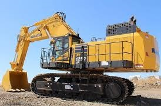

Disponibilidad Inmediata, Caterpillar, Volvo, Case.


Terracerias: Estabilizacion de Terrenos por medio de anclas, aplicacion de concreto lanzado, equipo disponible para su obra: traxcavos, retroexcavadoras, motoconformadoras, etc.


Cimentacion, elevacion, asfalto y trituracion, transporte de equipo, renta de Maquinaria a toda la Republica Mexicana.


EL MEJOR EQUIPO A SU ALCANCE
Cada equipo tiene su fortaleza y está fabricado para trabajar de manera óptima de acuerdo a cada aplicación, nosotros lo apoyamos a elegir el equipo adecuado para el trabajo o proyecto, para esto es importante conocer la aplicación que se va a realizar, ya sea para Agricultura, Asfalto, con Camiones fuera de Carretera, Canteras, Agregados, Ferrocarriles, Industria Cementera, Construcción, Construcción en General, Demolición y Reciclaje de Chatarra, Generación de Energía, Grúas, Maniobras de Carga Especializada, Manipulación de Materiales, Manipulación de Personal, Manipulación de Carga en Puertos, Minería, Pavimentación, Petróleo y Gas, Plantas de Energía y Equipo Ligero.
Pregúntenos, ¡ JUNTOS LO DEFINIMOS!
En Comercializadora Hermanos Afrin, S.A de C.V. le otorgamos la flexibilidad del alquiler por el plazo que usted requiera con el rendimiento y la productividad que espera, jhuntos diseñaremos una solución que apoye el crecimiento de su empresa minimizando riesgos y optimizando costos, nuestra gama de equipos nuevos nos permite apoyarlo en satisfacer sus necesidades de aplicación. Pregúntenos, juntos lo definiremos.
CONTACTO
comercializadora.hermanos.afrin@gmail.com
DIRECCION
Calle Nicolas Romero 407 5 Piso, INT 1-A, C.P.42000, Pachuca de Soto,HGO
